Sector: Turnover ; Australian Capital Territory ; Food retailing ; Unit: $ Millions Nutchanok Saitin
This report combines three time series analyses into one portfolio-style forecasting project. The project analyses monthly household goods retail turnover in New South Wales and compares benchmark, ETS, and ARIMA forecasting approaches.
The workflow follows these stages:
Sector: Turnover ; Australian Capital Territory ; Food retailing ; Unit: $ Millions # A tsibble: 3 x 2 [1M]
Month y
<mth> <dbl>
1 1982 Apr 15.5
2 1982 May 15.1
3 1982 Jun 15.5# A tsibble: 3 x 2 [1M]
Month y
<mth> <dbl>
1 2023 Apr 266.
2 2023 May 265.
3 2023 Jun 254.What is the data about
This series records monthly household goods retail turnover in New South Wales, measured in millions of dollars, over the period April 1982 to June 2023.
Get to know the data
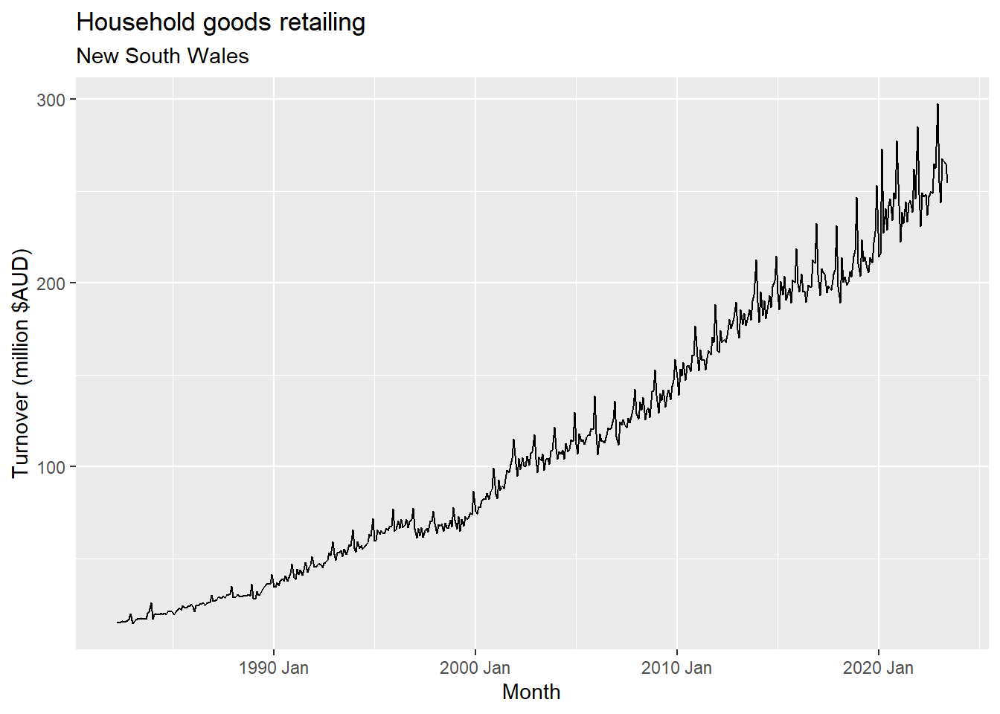
The series shows an upward trend that is not linear, along with a clear seasonal pattern. The seasonal fluctuations also become larger as turnover increases over time.
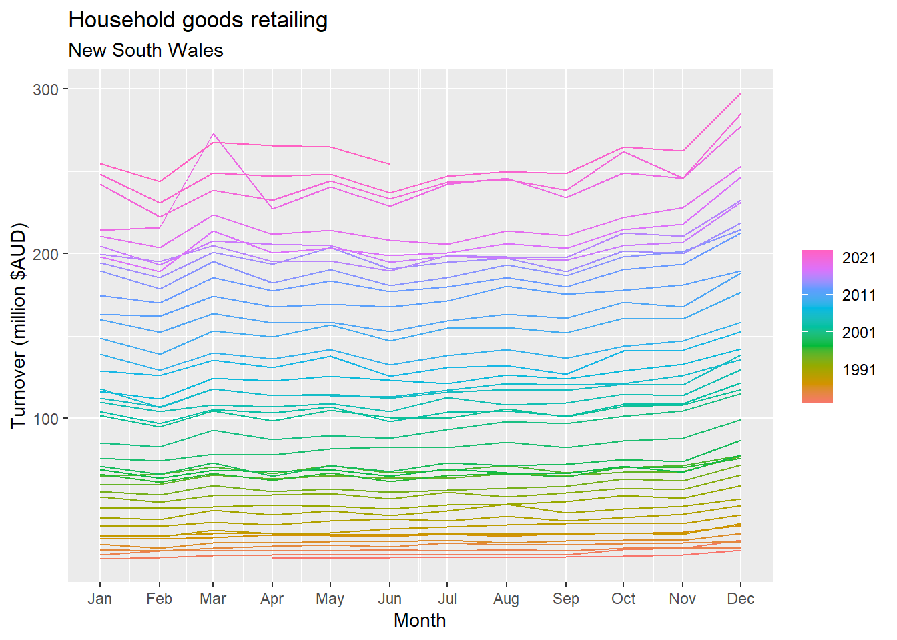
The seasonal plot shows clear seasonality, with turnover usually highest in December, possibly due to Christmas and New Year shopping. Smaller rises also appear around March, May and June. One year shows an unusual dip around August, suggesting a temporary disruption.
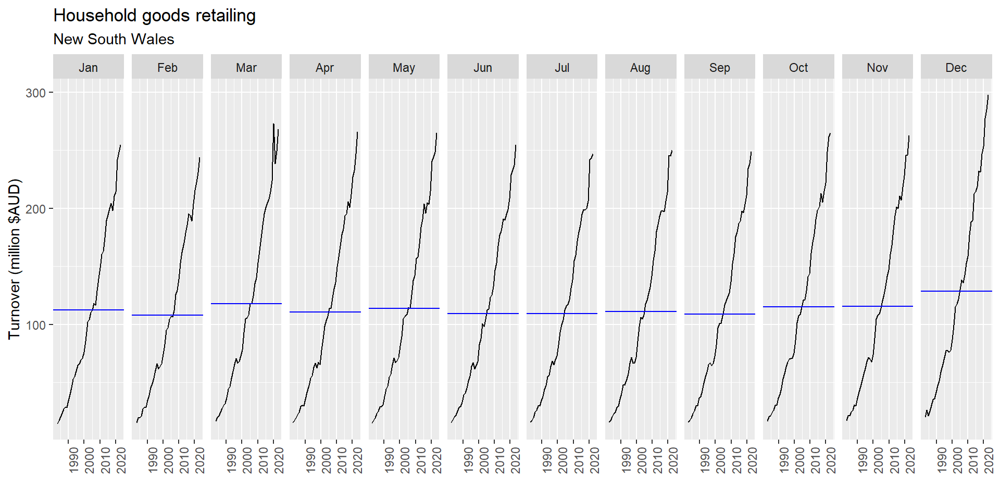
The subseries plot confirms strong seasonality, with December having the highest average turnover. Most months also show an upward trend over time, indicating that turnover has generally increased across the years.
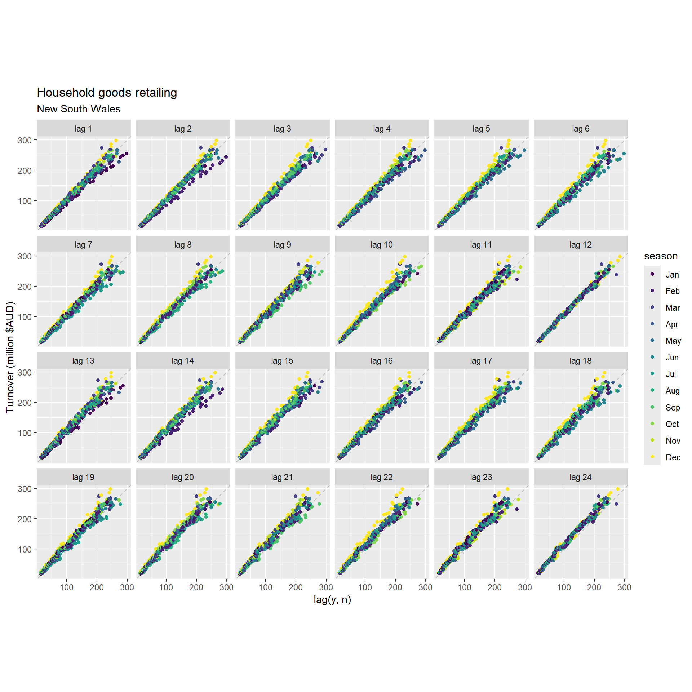
The lag plots show strong positive relationships, especially at lags 12 and 24, suggesting the series has strong dependence over time and clear yearly seasonality.
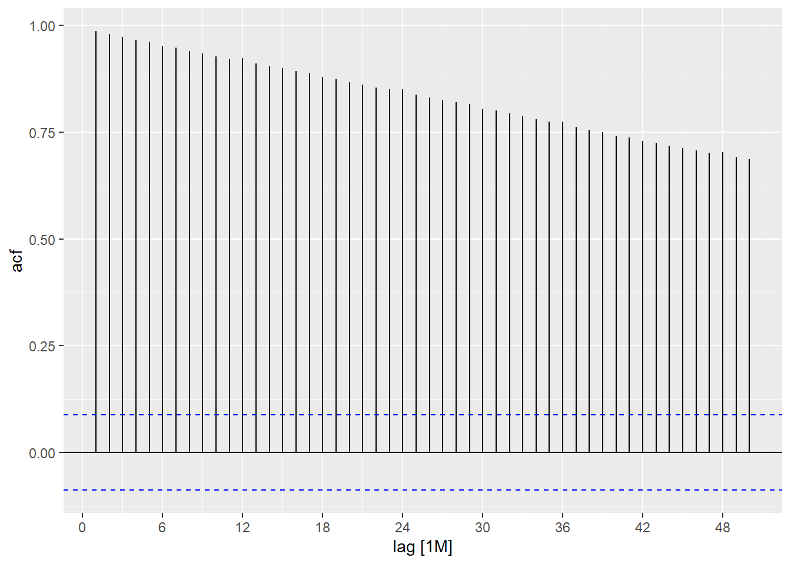
The ACF indicates the series is not white noise and shows strong persistence, consistent with the trend and seasonal structure seen earlier.
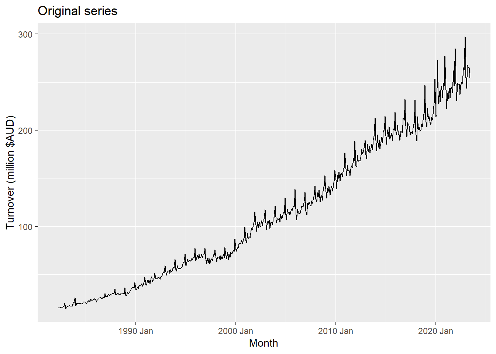
From the original series, it appears that a transformation is useful because seasonal variation increases as turnover rises over time. Both log and Box-Cox reduce this changing variance, making the series more stable and easier to model.
Transformation Comparison
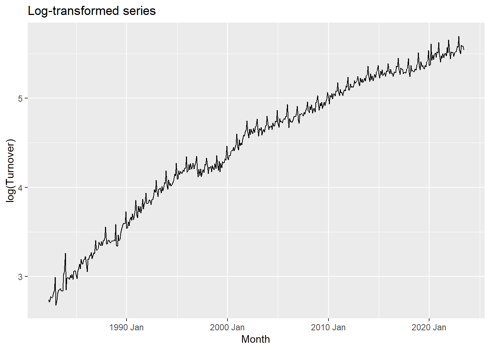
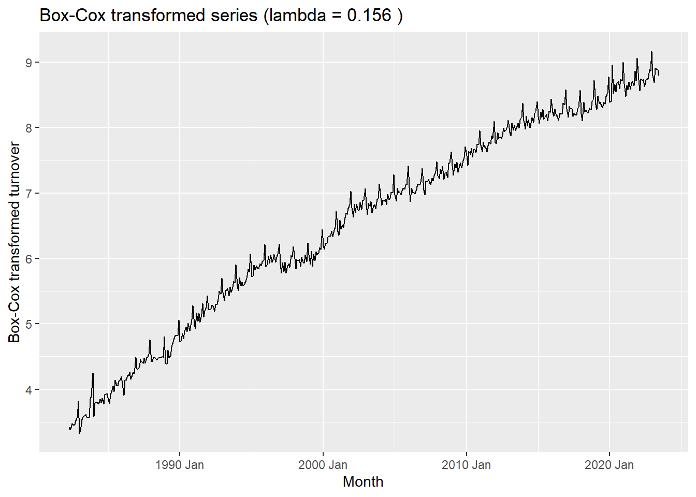
By comparing the two graphs, the Box-Cox transformation appears better because it makes the variation more stable across the series.
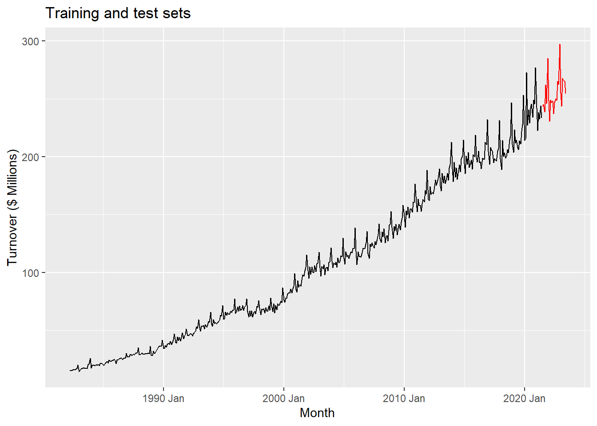
The original series has a clear monthly seasonal pattern and an upward trend, so Seasonal naïve and Drift were chosen as the two most appropriate benchmark methods. Seasonal naïve captures the repeating seasonal pattern, while Drift only captures the overall upward movement.
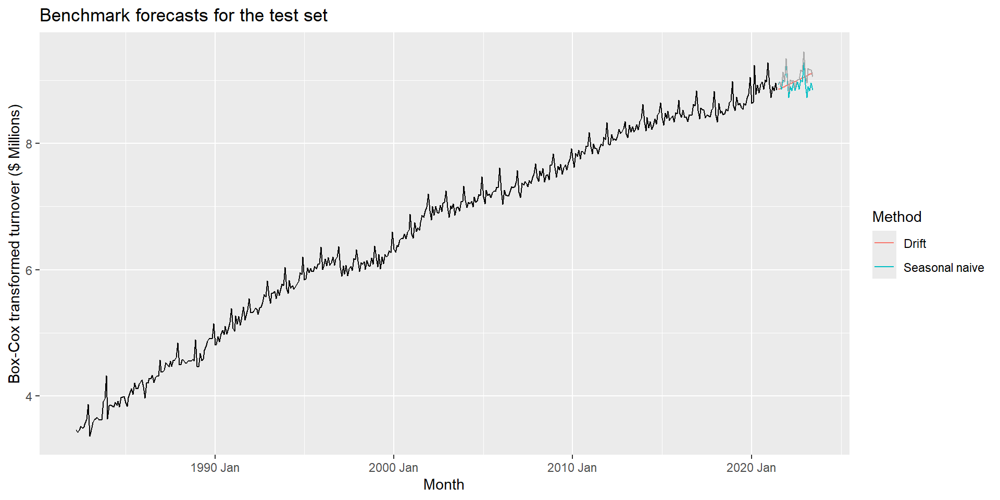
Forecast accuracy table
# A tibble: 2 × 4
.model RMSE MAE MAPE
<chr> <dbl> <dbl> <dbl>
1 drift 0.149 0.102 1.11
2 snaive 0.149 0.121 1.33The forecasting performance was compared on the Box-Cox transformed scale using RMSE, MAE and MAPE. From the test-set accuracy table, Seasonal naïve performed better because it gave lower RMSE, MAE and MAPE than Drift. This is also clear in the forecast plot, where Seasonal naïve follows the peaks and troughs more closely, while Drift misses the seasonal pattern.
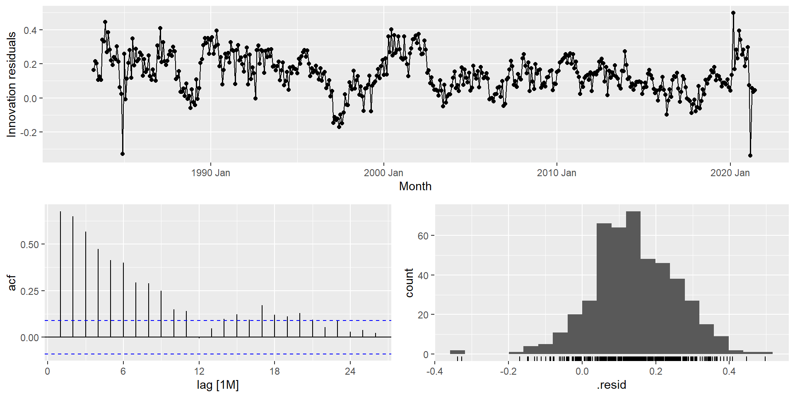
# A tibble: 1 × 3
.model lb_stat lb_pvalue
<chr> <dbl> <dbl>
1 snaive 1004. 0Residual analysis suggests that the Seasonal naïve model does not fully satisfy the white-noise assumptions. The residual time plot shows some clustering and several large spikes, rather than random variation around zero. The ACF plot has many significant spikes at the early lags, showing strong autocorrelation remains in the residuals. The histogram is slightly right-skewed, with some large positive residuals, so the distribution is not perfectly symmetric. This is also confirmed by the Ljung–Box test, where the p-value is approximately 0, indicating that the residuals are not uncorrelated and therefore do not resemble white noise.
Overall, the residuals still contain structure, meaning the model has not captured all of the information in the series. Since Seasonal naïve already captures the repeating monthly seasonal pattern, it appears to have missed some of the underlying level or trend changes over time.
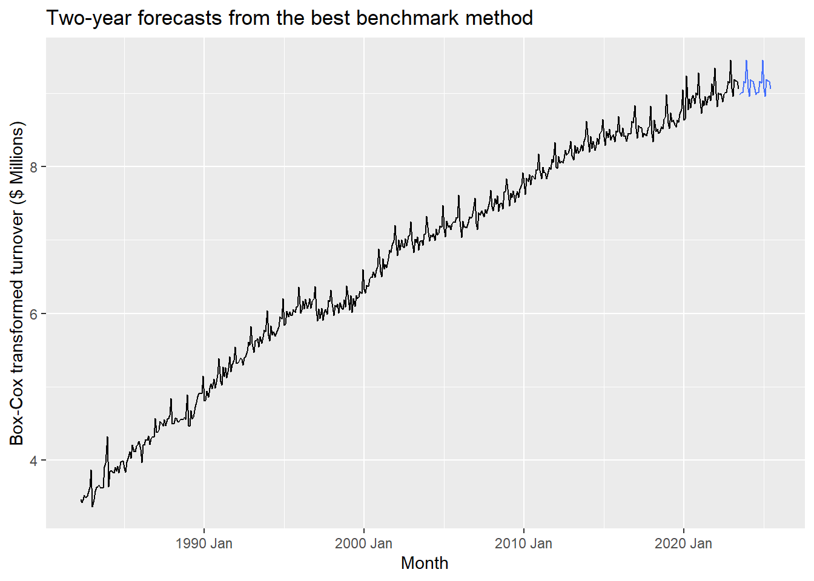
The forecasts keep the clear monthly seasonal pattern, with repeating peaks and troughs across the next two years. This is expected because Seasonal naïve repeats the values from the same months in the previous year. However, the forecasts remain at about the same level as the most recent year and do not show any additional upward trend. This means the method is useful as a simple benchmark, but it may miss further growth or any structural change in the series.
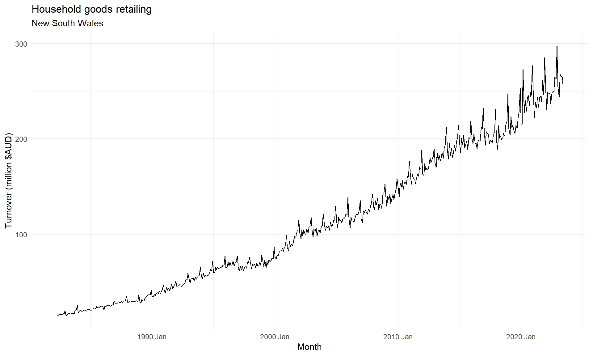
The time plot shows a clear upward trend and strong seasonality. The seasonal fluctuations become larger as the level of the series increases, indicating that multiplicative seasonality is more appropriate than additive seasonality. The overall variation also increases over time, so multiplicative errors are reasonable. Since the series has a clear upward long-run movement, an additive trend component is appropriate. Therefore, an ETS(M,A,M) model is a suitable choice for forecasting household goods retail turnover in New South Wales.
Series: y
Model: ETS(M,A,M)
Smoothing parameters:
alpha = 0.3814703
beta = 0.005040461
gamma = 0.1501278
Initial states:
l[0] b[0] s[0] s[-1] s[-2] s[-3] s[-4] s[-5]
15.16635 0.2628331 0.9990701 0.9298426 0.9525574 1.157924 1.010279 1.031448
s[-6] s[-7] s[-8] s[-9] s[-10] s[-11]
0.9535658 1.002955 1.015661 0.9772811 0.9903227 0.9790935
sigma^2: 0.0011
AIC AICc BIC
4127.648 4128.931 4199.125 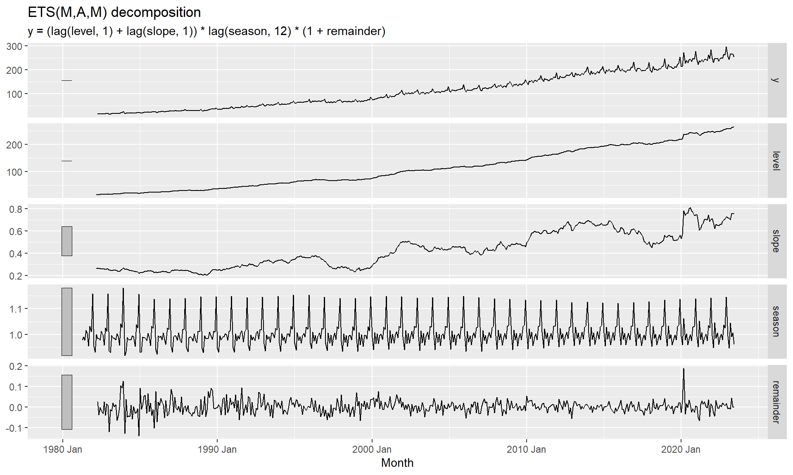
The estimated model is ETS(M,A,M), which is consistent with what was observed from the time plot. The level smoothing parameter is moderately large (alpha = 0.5460), so the model updates the level fairly quickly when new observations are added. The trend smoothing parameter is very small (beta = 0.0047), suggesting that the slope changes only slowly over time. The seasonal smoothing parameter is moderate (gamma = 0.323), showing that the seasonal pattern is clear but can still change somewhat over time. The initial seasonal indices are mostly close to 1, as expected for multiplicative seasonality, with some months above and some below the average level. The component plot also shows an upward level, a positive trend and clear recurring seasonality, while the remainder is centred near zero with a few spikes.
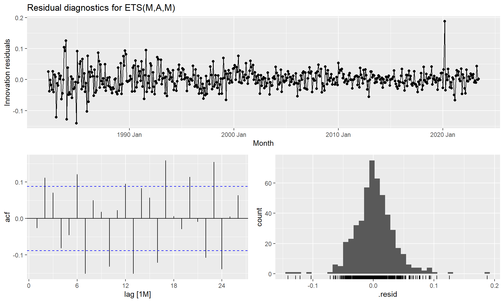
The residuals are centred near zero, but the variance is not perfectly constant, with larger spikes around 2000 and 2020. The ACF shows several significant spikes, so autocorrelation remains. The histogram is roughly bell-shaped but slightly skewed, so the residuals are not completely random.
# A tibble: 1 × 3
.model lb_stat lb_pvalue
<chr> <dbl> <dbl>
1 MAM 121. 0For the Ljung–Box test, the null hypothesis is that the residuals are uncorrelated up to lag 24. Using 24 lags and 16 model degrees of freedom gives 8 degrees of freedom. The p-value is very small (< 0.05), so the null hypothesis is rejected. Therefore, some autocorrelation remains and I am not fully satisfied with the fit.
Series: y
Model: ETS(M,Ad,M)
Smoothing parameters:
alpha = 0.5022417
beta = 0.02195263
gamma = 0.0001156346
phi = 0.9799978
Initial states:
l[0] b[0] s[0] s[-1] s[-2] s[-3] s[-4] s[-5]
15.02763 0.2933299 1.015488 0.9384767 0.9843611 1.135595 1.01707 1.021138
s[-6] s[-7] s[-8] s[-9] s[-10] s[-11]
0.9738765 0.9949078 0.9875444 0.9593012 0.9970489 0.9751932
sigma^2: 0.0011
AIC AICc BIC
4126.600 4128.037 4202.282 R automatically selected the ETS(M,Ad,M) model. This means the model uses multiplicative errors, a damped additive trend, and multiplicative seasonality. The model was chosen by fitting a range of candidate ETS models to the data and comparing their information criterion values. In particular, ETS(y) selects the model with the lowest AICc, so the chosen model is the one that gave the best balance between goodness of fit and model complexity among the candidate ETS models.
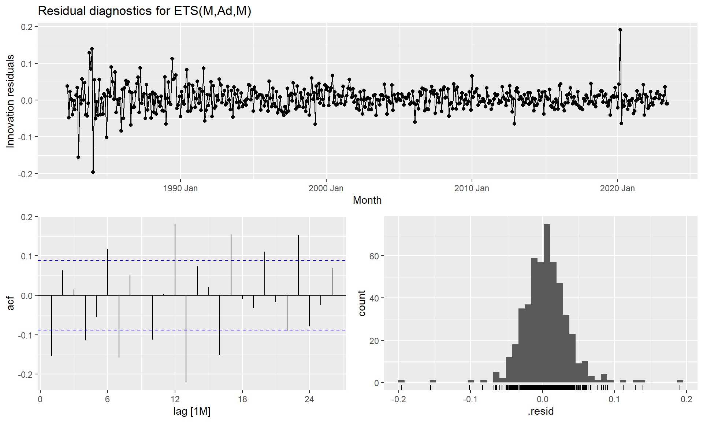
# A tibble: 1 × 3
.model lb_stat lb_pvalue
<chr> <dbl> <dbl>
1 AUTO 144. 0Difference between the two models
The two models differ only in the trend component. ETS(M,A,M) uses an additive trend, while ETS(M,Ad,M) uses a damped additive trend. Both keep multiplicative error and multiplicative seasonality.
Which model to choose?
I would choose ETS(M,Ad,M) because it has lower AIC, AICc and BIC, and its residual diagnostics are slightly better. The Ljung–Box test still rejects the null of no autocorrelation up to lag 24, so neither model is perfect, but ETS(M,Ad,M) is preferred overall.
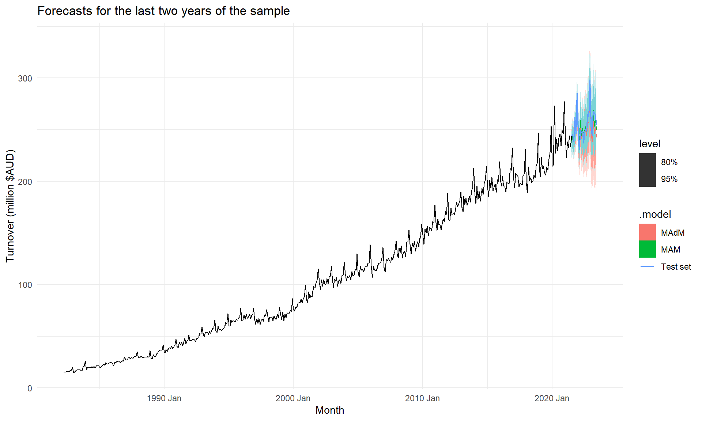
# A tibble: 2 × 10
.model .type ME RMSE MAE MPE MAPE MASE RMSSE ACF1
<chr> <chr> <dbl> <dbl> <dbl> <dbl> <dbl> <dbl> <dbl> <dbl>
1 MAM Test 0.995 5.17 3.96 0.333 1.54 NaN NaN -0.0427
2 MAdM Test 5.02 7.77 6.13 1.89 2.35 NaN NaN 0.342 MASE and RMSSE are returned as NaN here, so the comparison is based mainly on RMSE, MAE and MAPE. Both models capture the strong trend and seasonality, and most test observations fall within the forecast intervals. However, ETS(M,A,M) performs better on the test set because it has lower RMSE, MAE and MAPE than ETS(M,Ad,M). The forecast plot also shows that ETS(M,A,M) follows the test data more closely. Although ETS(M,Ad,M) was preferred earlier based on in-sample model selection, ETS(M,A,M) performs better on the test set, so it is chosen as the better forecasting model.
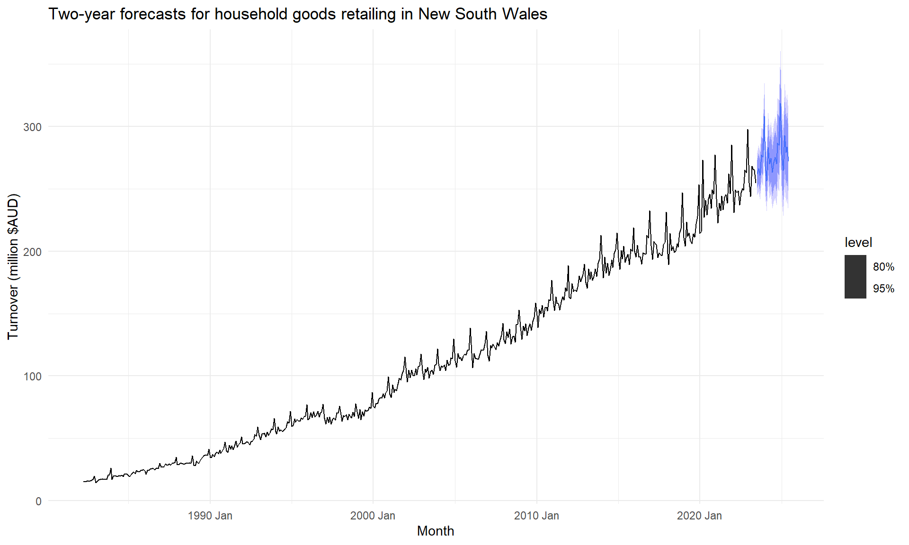
The forecasts from ETS(M,A,M) continue to show a strong upward trend and clear seasonality over the next two years. The seasonal peaks and troughs remain pronounced. The shaded areas represent the 80% and 95% prediction intervals, with the wider shaded band showing greater uncertainty. These intervals widen over time, showing increasing uncertainty as the forecast horizon increases. Overall, the model suggests that household goods retail turnover in New South Wales will continue to grow, while maintaining the same seasonal pattern seen in the historical data.
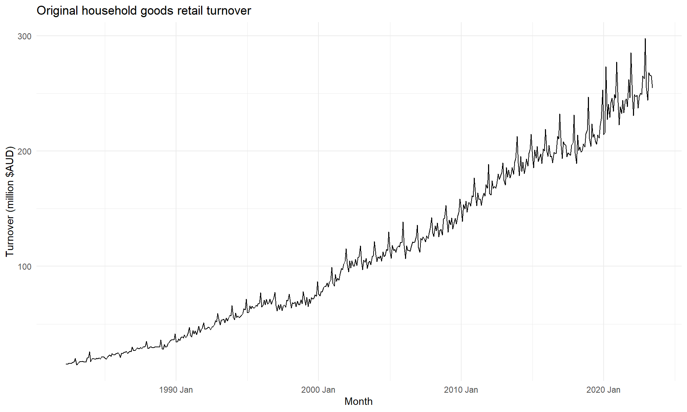
The original series shows a strong upward trend and clear monthly seasonality. The size of the seasonal fluctuations increases as turnover rises, so the series does not have stable variance or a stable mean.
Transformed series
[1] 0.1558024Guerrero’s method gives a lambda of 0.345. Since this is not very close to 0, I use the Box-Cox transformation rather than the log transformation. This helps stabilise the increasing seasonal variation before differencing.
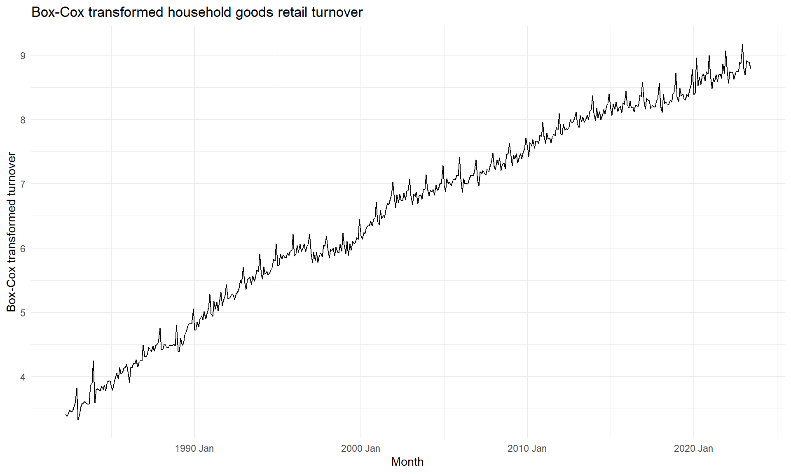
The Box-Cox transformation reduces the increasing seasonal variation, making the fluctuations more stable over time. However, the series still has a clear upward trend and strong yearly seasonality, so the transformed series is not yet stationary and differencing is required.
Seasonal differencing
Since the data are monthly and show yearly seasonality, a seasonal difference with lag 12 is applied.
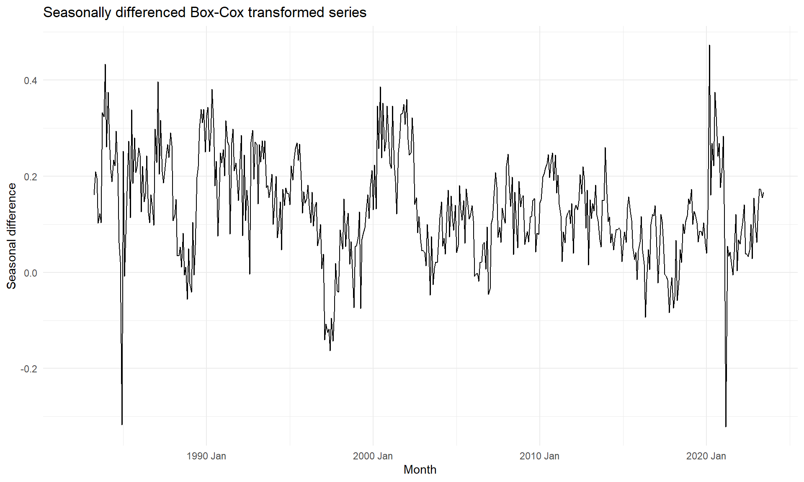
After seasonal differencing, much of the yearly seasonal pattern has been removed. However, the series still does not fluctuate clearly around a constant level, so a further first difference is applied before fitting an ARIMA model.
Seasonal and first differencing
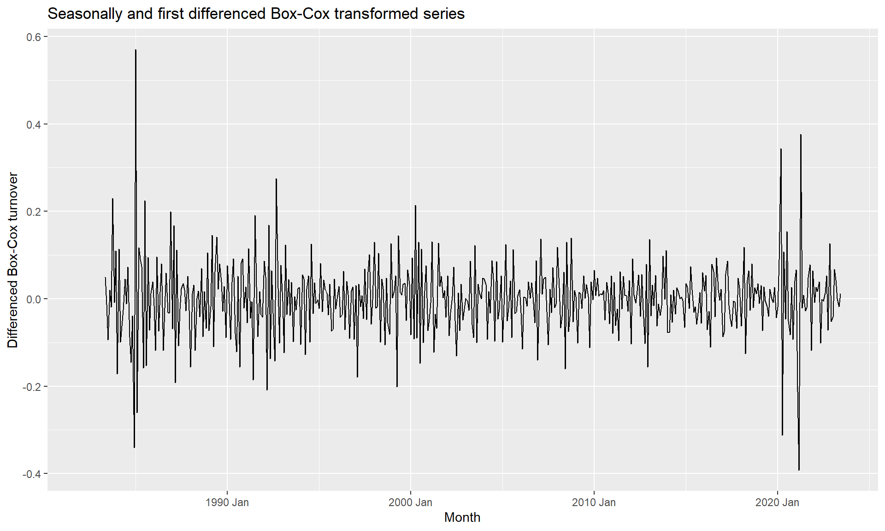
After seasonal and first differencing, the series appears approximately stationary, with no clear trend or repeating seasonality. Some large spikes remain, indicating unusual short-term shocks. The 2000–2002 spikes show sharp irregular changes, while the 2020–2023 spikes likely reflect COVID-19-related household spending disruption.
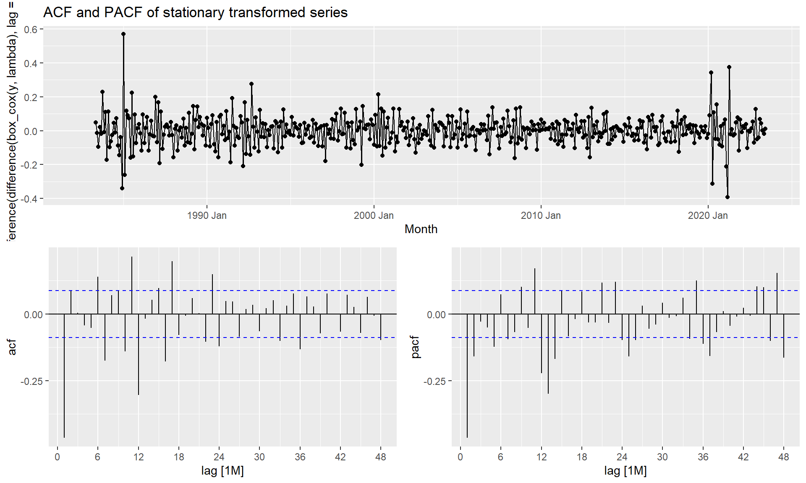
The differenced series fluctuates around zero, so no further differencing is used. The ACF and PACF are messy, but the main noticeable spikes are at lag 1 and the seasonal lag 12. Since first and seasonal differencing have already been applied, I choose ARIMA(0,1,1)(0,1,1)[12], or ARIMA(0,1,1) with a seasonal MA(1) term, as the initial model.
Series: y
Model: ARIMA(0,1,1)(0,1,1)[12]
Transformation: box_cox(y, lambda)
Coefficients:
ma1 sma1
-0.5747 -0.8696
s.e. 0.0349 0.0279
sigma^2 estimated as 0.003772: log likelihood=653.26
AIC=-1300.52 AICc=-1300.47 BIC=-1287.98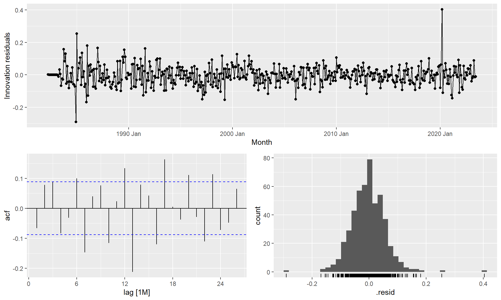
# A tibble: 1 × 3
.model lb_stat lb_pvalue
<chr> <dbl> <dbl>
1 arima_q2 120. 1.55e-15The residuals are mostly centred around zero, but large spikes remain around 2000–2002 and 2020–2023. The residual ACF has significant spikes and the histogram has heavier tails. The Ljung–Box p-value is below 0.05, so I reject the null hypothesis of no residual autocorrelation. Therefore, the Q2 model should be reviewed.
The ACF/PACF suggested short-term and seasonal dependence, so the initial model included non-seasonal and seasonal MA terms. Because the initial ARIMA residuals still showed autocorrelation, I considered nearby models with additional AR or MA terms. The same Box-Cox transformation and differencing orders are kept to allow fair comparison using information criteria.
Model justification:
arima_011_011: initial model from the ACF/PACF inspection, based on ACF spikes at lag 1 and lag 12.arima_111_011: adds AR(1) because PACF also shows early-lag spikes.arima_012_011: adds an extra MA term because the initial ARIMA residuals still showed autocorrelation.arima_011_111: adds seasonal AR(1) because PACF shows a strong spike at lag 12.arima_111_111: allows both non-seasonal and seasonal AR/MA terms to capture remaining autocorrelation.# A tibble: 5 × 4
.model AIC AICc BIC
<chr> <dbl> <dbl> <dbl>
1 arima_111_111 -1312. -1312. -1291.
2 arima_011_111 -1308. -1308. -1292.
3 arima_111_011 -1305. -1305. -1288.
4 arima_012_011 -1305. -1305. -1288.
5 arima_011_011 -1301. -1300. -1288.Based on AICc, arima_012_011, or ARIMA(0,1,2)(0,1,1)[12], is selected as the best model among the alternatives considered. It also has the lowest AIC and BIC, which supports this choice. Compared with the initial ARIMA model, this suggests that adding an extra non-seasonal MA term improves the model fit.
Series: y
Model: ARIMA(0,1,2)(0,1,1)[12]
Transformation: box_cox(y, lambda)
Coefficients:
ma1 ma2 sma1
-0.630 0.1170 -0.8716
s.e. 0.044 0.0465 0.0283
sigma^2 estimated as 0.003731: log likelihood=656.31
AIC=-1304.62 AICc=-1304.53 BIC=-1287.9Series: y
Model: ARIMA(1,1,1)(2,1,2)[12]
Transformation: box_cox(y, lambda)
Coefficients:
ar1 ma1 sar1 sar2 sma1 sma2
-0.1348 -0.4410 0.7064 -0.2934 -1.4495 0.5549
s.e. 0.0885 0.0813 0.0843 0.0573 0.0820 0.0749
sigma^2 estimated as 0.003563: log likelihood=668.57
AIC=-1323.14 AICc=-1322.9 BIC=-1293.89# A tibble: 1 × 3
.model lb_stat lb_pvalue
<chr> <dbl> <dbl>
1 auto_harder 58.0 0.0000145The harder automatic search selected ARIMA(3,0,0)(0,1,1)[12] with drift, while the Q4 model was ARIMA(0,1,2)(0,1,1)[12]. The automatic model uses non-seasonal AR terms and only seasonal differencing, so it captures short-term dependence through past values rather than through first differencing and MA terms. It has a lower AICc, but because the differencing order is different, AICc is not a fair basis for final model selection. The residuals are mostly centred around zero, but some large spikes remain. The residual ACF still has significant spikes and the Ljung–Box p-value is below 0.05, so the residuals are not fully white noise.
# A tibble: 2 × 10
.model .type ME RMSE MAE MPE MAPE MASE RMSSE ACF1
<chr> <chr> <dbl> <dbl> <dbl> <dbl> <dbl> <dbl> <dbl> <dbl>
1 auto_hard_q5 Test -4.86 7.46 6.34 -1.96 2.52 0.974 0.875 0.0973
2 manual_q4 Test 0.114 5.13 4.05 -0.0190 1.58 0.622 0.602 -0.0516I select the manual Q4 ARIMA(0,1,2)(0,1,1)[12] for forecasting because it has lower RMSE, MAE, MAPE, MASE and RMSSE on the 24-month test set. AICc was used within Q4 because models had the same differencing orders, but Q4 and Q5 differ in non-seasonal differencing.
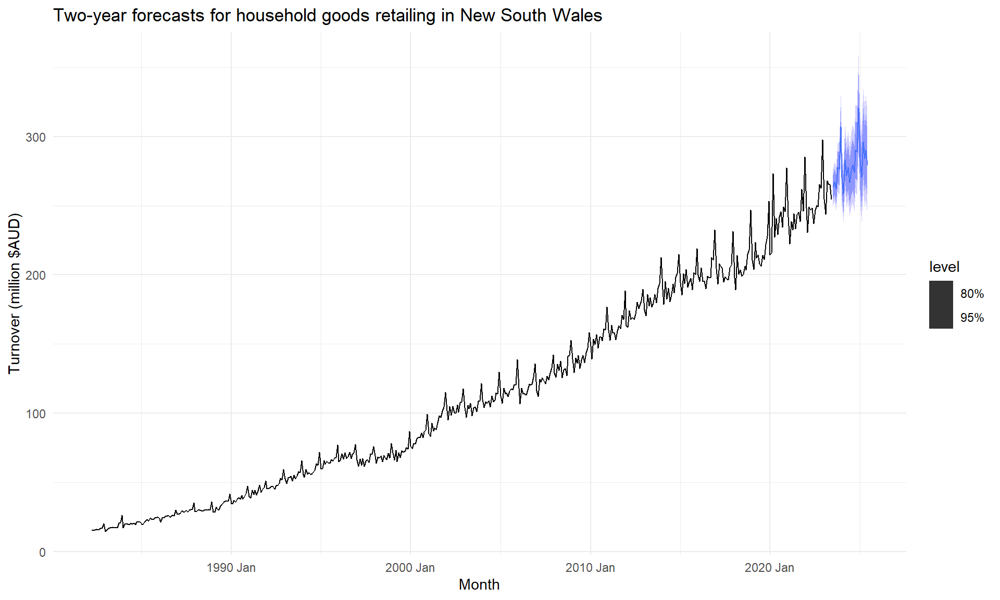
The ARIMA forecasts continue the upward movement in household goods turnover and preserve the strong yearly seasonal pattern. The prediction intervals widen over the two-year horizon, showing increasing uncertainty. Although the forecasts look reasonable, they should be interpreted cautiously because residual diagnostics showed some remaining autocorrelation.
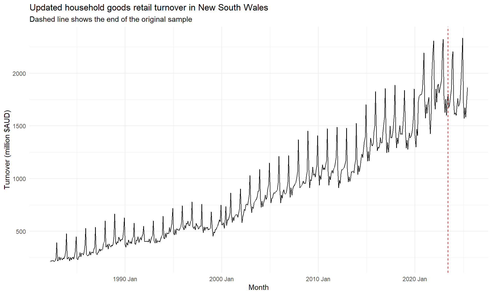
The updated time series still shows an upward trend with clear yearly seasonality. During the COVID period, turnover increased sharply and became more volatile. After the COVID spending surge, turnover might be expected to slow or fall as spending patterns normalised, but the updated data remains above the pre-COVID level. Instead, it stays at a higher level, although the movement is more uneven.
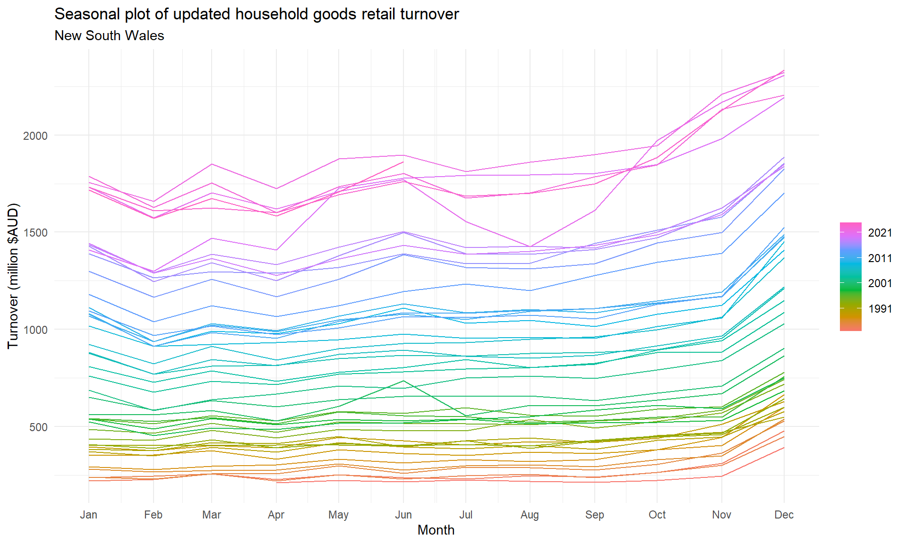
The seasonal plot also shows that recent years are higher than earlier years in most months. The post-COVID years have stronger seasonal peaks, especially near the end of the year. This supports the time series plot, where COVID did not create a sustained decline, but the series moved to a higher and more volatile level.
Household goods turnover may not have fallen back to the pre-COVID level because spending patterns changed during the pandemic. More time at home, working from home, furniture purchases, home improvement, and replacement of household items may have supported demand. However, this is only a possible explanation from the series movement, not a causal conclusion.
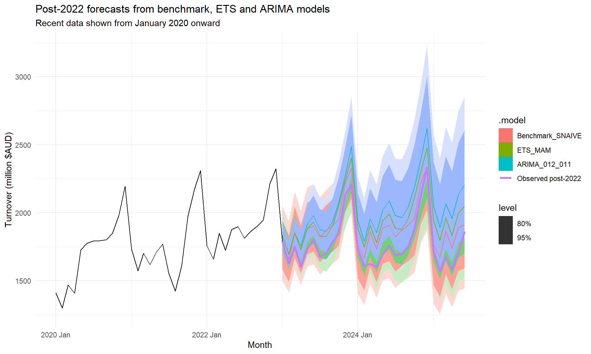
The models were compared using their assumptions, visual forecast performance and prediction intervals. Seasonal naïve assumes each future month follows the same month from the previous year and visually tracks the observed post-2022 data most closely. ETS(M,A,M) captures trend and multiplicative seasonality, but forecasts slightly higher in several months. ARIMA captures autocorrelation after transformation and differencing, but tends to over-forecast around some peaks. The prediction intervals are wider around seasonal peaks, showing greater uncertainty when turnover is high.
# A tibble: 3 × 10
.model .type ME RMSE MAE MPE MAPE MASE RMSSE ACF1
<chr> <chr> <dbl> <dbl> <dbl> <dbl> <dbl> <dbl> <dbl> <dbl>
1 ARIMA_012_011 Test -247. 265. 247. -14.1 14.1 4.40 3.04 0.714
2 Benchmark_SNAIVE Test -113. 128. 115. -6.54 6.64 2.04 1.46 0.294
3 ETS_MAM Test -178. 189. 178. -10.2 10.2 3.18 2.17 0.484The Seasonal naïve benchmark is the most accurate model over the post-2022 period, with the lowest RMSE, MAE, MAPE, MASE and RMSSE. ETS(M,A,M) is the second best, while ARIMA has the largest errors. All ME values are negative, meaning all models over-forecast on average, but Seasonal naïve has the smallest forecast bias.
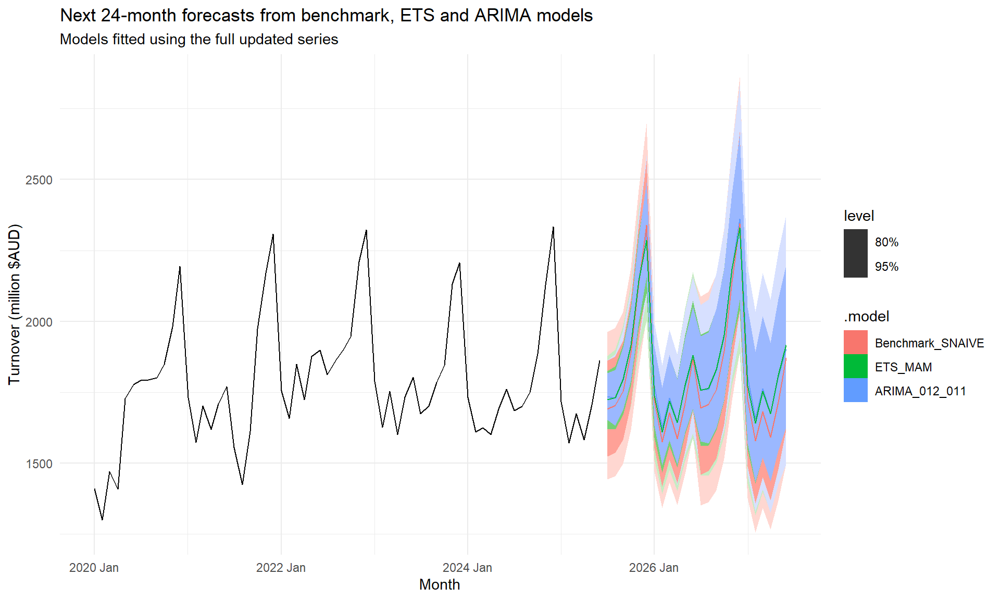
The three models all forecast a strong yearly seasonal pattern, with clear peaks and troughs continuing over the next 24 months. This is reasonable because the updated series still shows strong seasonality after COVID-19. The Seasonal naïve benchmark repeats the most recent seasonal pattern, assuming future months behave like the same months in the previous year. This is suitable here because the post-2022 accuracy evaluation showed it had the lowest RMSE, MAE, MAPE, MASE and RMSSE. ETS(M,A,M) and ARIMA(0,1,2)(0,1,1)[12] produce similar seasonal forecasts, but ETS allows changing level, additive trend and multiplicative seasonality, while ARIMA models autocorrelation after transformation and differencing. ETS gives wider intervals when seasonal peaks are large, while ARIMA appears slightly smoother. Overall, the models have handled the post-COVID pattern reasonably well because they continue the higher post-COVID seasonal structure, but the wide intervals show future turnover is still uncertain after the large COVID-period movements.
The complete workflow shows that NSW household goods retail turnover has a strong upward trend and clear yearly seasonality. Seasonal variation increases as the level of turnover rises, so transformation and careful model evaluation are important. Benchmark, ETS, and ARIMA models each provide useful perspectives: benchmark models offer a simple baseline, ETS models capture trend and seasonality directly, and ARIMA models model autocorrelation after transformation and differencing. The updated post-COVID data indicates that turnover remained at a higher and more volatile level than before the pandemic, making ongoing model evaluation important.